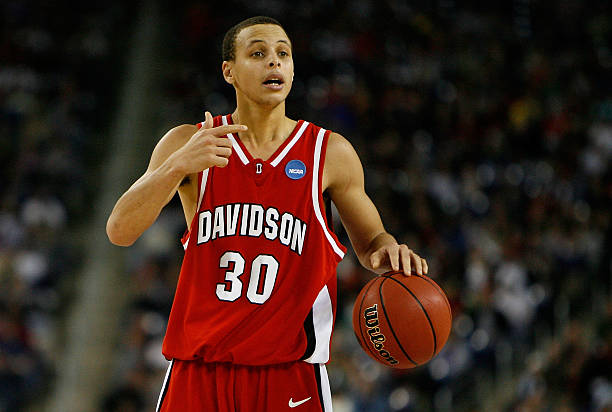
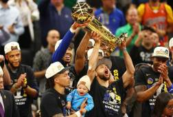
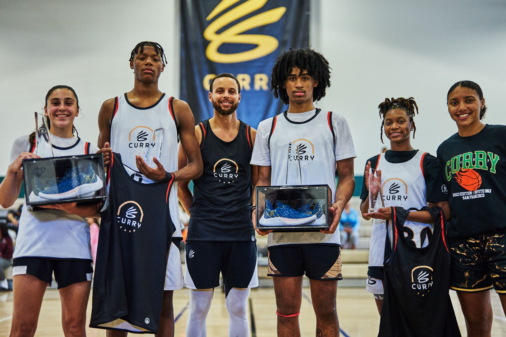

Stephen Curry, nacido el 14 de marzo de 1988 en Akron, Ohio, comenzó su camino en el baloncesto en la Universidad de Davidson. Su habilidad para los tiros de larga distancia destacó desde temprano, liderando a Davidson a un Elite Eight en 2008.
Draftado por los Golden State Warriors en 2009, Curry revolucionó el juego con su tiro de tres puntos. Ha ganado cuatro campeonatos de la NBA (2015, 2017, 2018, 2022) y dos premios MVP (2015, 2016), siendo el primero en ganar un MVP unánime.
Conocido como el mejor tirador de la historia, Curry ha cambiado la forma en que se juega el baloncesto, inspirando a una nueva generación de jugadores. Su trabajo fuera de la cancha, incluyendo su fundación, también ha dejado una marca significativa.
